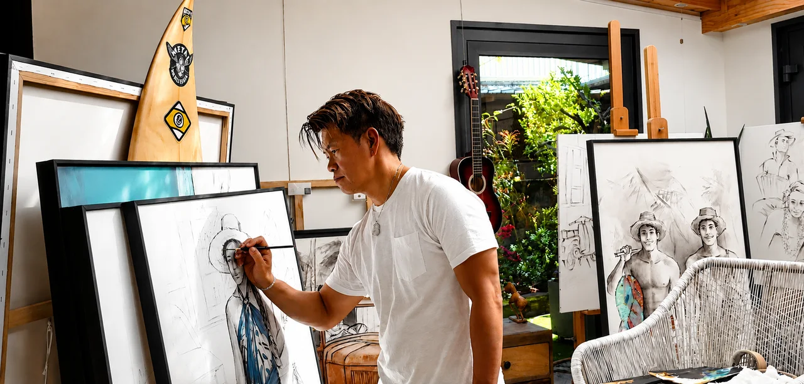
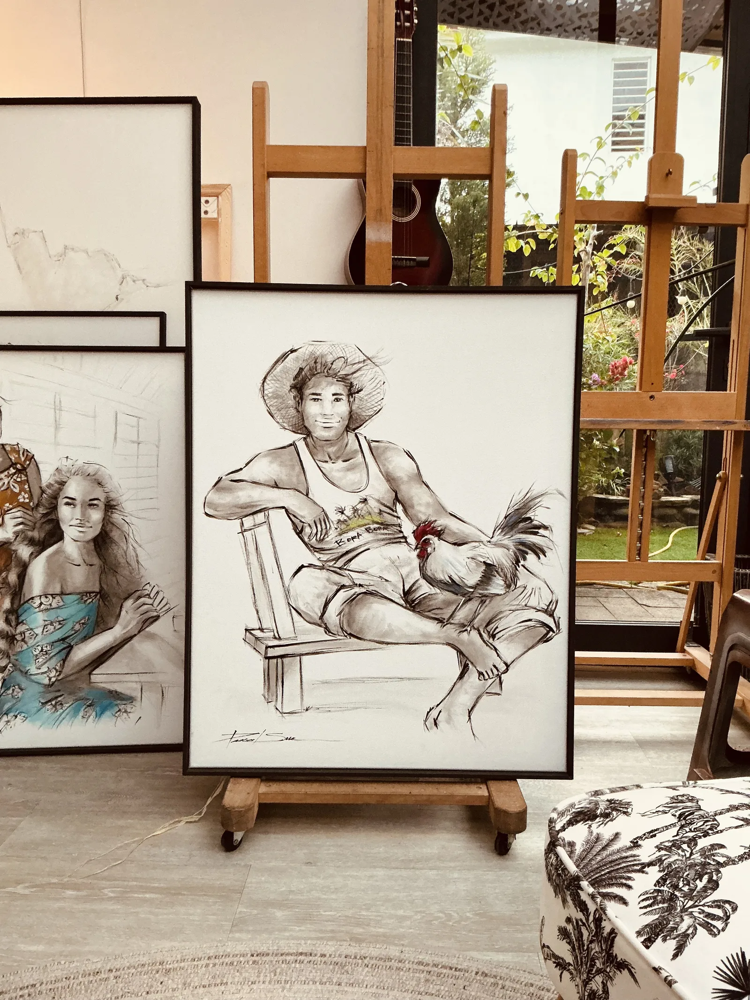

À travers des scènes de vie polynésiennes, Pascal Sun ne cherche pas à raconter une histoire spectaculaire, mais à faire renaître une émotion, un souvenir ou une sensation que chacun peut reconnaître. Ses œuvres évoquent une Polynésie intemporelle où les regards, les silences, les gestes simples et les paysages parlent davantage que les mots.
Autodidacte, Pascal a développé une identité artistique immédiatement reconnaissable. Son style repose sur une approche minimaliste où chaque trait possède une intention. Il préfère suggérer plutôt que montrer, laissant volontairement de l'espace afin que le regard puisse respirer et que chacun puisse compléter l'histoire avec sa propre imagination.
Le noir et blanc constitue la base de son langage artistique. Une touche de couleur, discrète mais assumée, vient ensuite guider le regard vers l'essentiel. Pour lui, la couleur n'est jamais un remplissage ; elle est une émotion.
Ses inspirations naissent du quotidien polynésien : les pêcheurs, les jeunes, les vahine, les véhicules anciens, les pirogues, les marchés, les villages, les scènes d'autrefois et celles d'aujourd'hui. Pourtant, ses tableaux dépassent le simple témoignage culturel. Ils parlent de transmission, de liberté, d'authenticité, de joie de vivre et du lien profond entre l'homme et son environnement.
Son travail est guidé par une conviction simple : la simplicité possède une force immense. Une œuvre n'a pas besoin d'être chargée pour être puissante. Ce sont la composition, l'équilibre, la lumière et l'émotion qui lui donnent son véritable impact.
Au-delà de la technique, Pascal souhaite transmettre une énergie positive. Chaque création est pensée pour apporter de la sérénité, du sourire et du bien-être. Ses tableaux ne cherchent pas à impressionner ; ils cherchent à toucher.
Humble, perfectionniste, observateur et profondément attaché à sa culture, il privilégie toujours la sincérité à l'effet de mode. Il passe beaucoup de temps à rechercher la justesse d'une posture, d'un regard ou d'une composition, convaincu que ce sont les petits détails qui donnent une âme à une œuvre.
Son univers est contemporain tout en restant profondément enraciné dans les traditions polynésiennes. Il ne peint pas uniquement la Polynésie telle qu'elle est ; il peint celle qu'il ressent. Chaque tableau devient ainsi une fenêtre ouverte sur un monde apaisé, où le temps semble suspendu et où la beauté naît de la simplicité.
Through Polynesian scenes of everyday life, Pascal Sun does not try to tell a spectacular story, but to bring back an emotion, a memory or a sensation everyone can recognise. His works evoke a timeless Polynesia where gazes, silences, simple gestures and landscapes speak louder than words.
Self-taught, Pascal has developed an instantly recognisable artistic identity. His style rests on a minimalist approach where every stroke carries an intention. He prefers to suggest rather than to show, deliberately leaving space so the eye can breathe and everyone can complete the story with their own imagination.
Black and white is the foundation of his artistic language. A touch of colour, discreet yet assured, then guides the eye toward the essential. For him, colour is never a filler; it is an emotion.
His inspiration springs from Polynesian daily life: fishermen, youth, vahine, old vehicles, outrigger canoes, markets, villages, scenes of yesteryear and of today. Yet his paintings go beyond cultural testimony. They speak of transmission, freedom, authenticity, joie de vivre and the deep bond between people and their environment.
His work is guided by a simple conviction: simplicity holds immense power. A work does not need to be busy to be strong. Composition, balance, light and emotion are what give it its true impact.
Beyond technique, Pascal wishes to pass on positive energy. Each creation is meant to bring serenity, smiles and well-being. His paintings do not seek to impress; they seek to touch.
Humble, perfectionist, observant and deeply attached to his culture, he always favours sincerity over fashion. He spends a long time searching for the rightness of a posture, a gaze or a composition, convinced that small details are what give a work its soul.
His universe is contemporary while remaining deeply rooted in Polynesian traditions. He does not only paint Polynesia as it is; he paints the one he feels. Each painting thus becomes a window onto a peaceful world, where time seems suspended and beauty is born of simplicity.